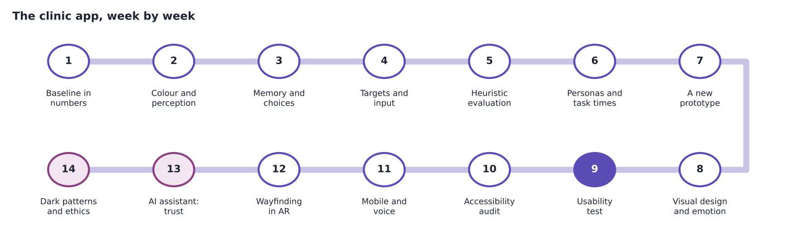
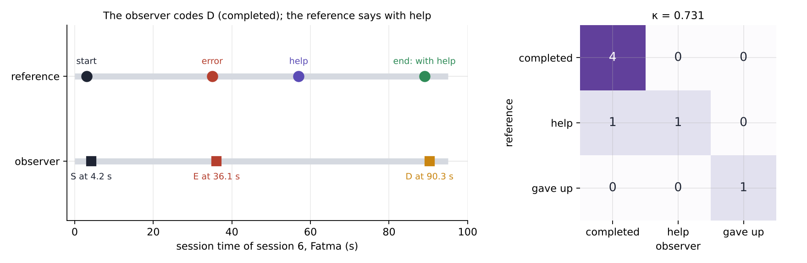
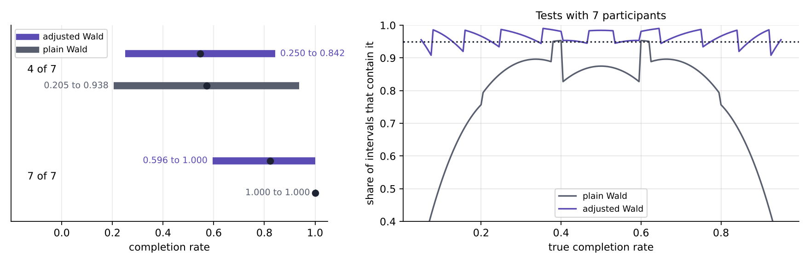
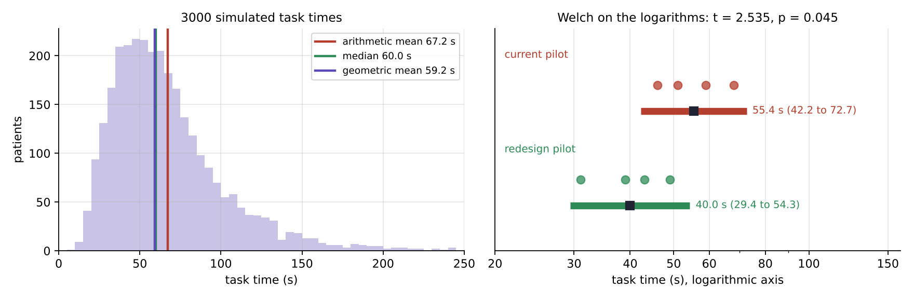
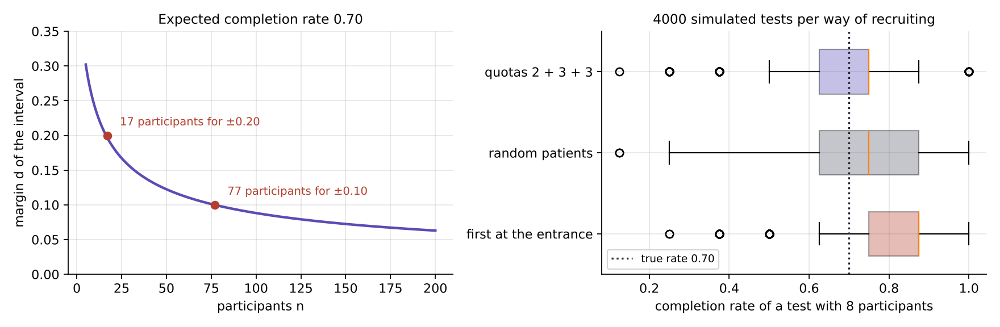
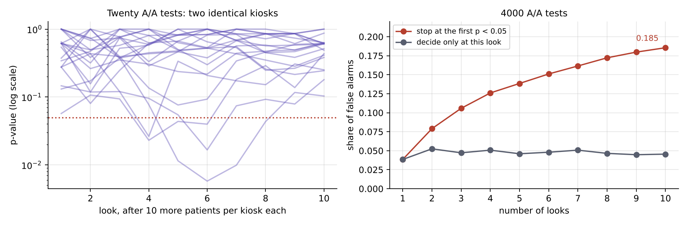
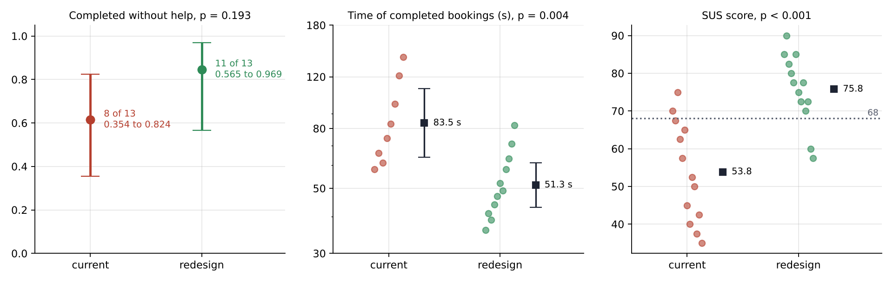

Overview
Weeks 1 to 8 measured the clinic app, described its patients and redesigned its screens. This week tests the current and the new design with patients and asks how much a handful of people can tell. It starts with the test session: A realistic task, thinking aloud, a neutral moderator and observers who code what happens. Completion rates and task times from a few people are uncertain, so confidence intervals put a range around them. The week then asks who should take part and how many, and how two designs are compared without being fooled by chance. The clinic app reaches stage 9, a usability test of both designs with 26 patients. The Python step introduces distributions and tests with SciPy. The week closes with artificial intelligence (AI) that helps to analyse test sessions.
Week at a glance
flowchart LR A["The test session"] --> B["Completion rates"] B --> C["Time on task"] C --> D["Who and how many"] D --> E["Comparing two designs"] E --> F["Interface clinic"] F --> G["The human side"] G --> S["The clinic app, stage 9"] S --> H["Toward human-AI interaction"]
Every method on this page is also written as Python code in the Colab notebook of the week. Its code is divided into numbered sections. Each orange box on this page names the section whose code carries out what the text above the box explains. The box says what to run and what to look at in that section, and its button opens the Colab notebook at that place. The games, the practice parts and the self-assessment of the week are in the interactive lab. Each violet box opens one part of the interactive lab. The part ends with a link back to its box on this page, and the Colab notebook is always opened from the orange boxes here.
Python step 9: Distributions and tests with SciPy
Python code in the Colab notebook, right after Section 0 (setup). Open the Colab notebook and run this step cell by cell: It consists of short pieces of Python code with their explanations, a quick check and three exercises. Topics: The normal distribution · Small samples and the t distribution · Counting successes with the binomial distribution · A test gives a p-value.
The step introduces SciPy, the scientific library of Python [1, 2]. Its distributions give the numbers behind every interval of this week: The normal distribution, the t distribution for small samples and the binomial distribution of successes. The step ends with a first test and its p-value. Students who have never programmed start with the start-here notebook of the course.
Weeks 1 to 7 measured the booking flow, fitted it to human abilities, described three personas and built a prototype. Week 8 gave the summary screen a calm visual design and moved a long wait to the start.
This week tests both designs with patients. Stage 9 compares the current app and the redesign on completion, time, errors, satisfaction and first impressions, each with its uncertainty.

The test session: Tasks, thinking aloud and coding
Week 1 defined usability by effectiveness, efficiency and satisfaction and turned them into measures. A usability test produces these measures with real people. Each participant receives a realistic task, such as booking the earliest appointment in cardiology, and tries it alone while a moderator watches. A formative test looks for problems to fix, and a summative test measures how well a design performs.
In a think-aloud test, participants say what they look for, read and decide while they work. Boren and Ramey compared the classic protocol of Ericsson and Simon with what practitioners actually do [3]. The classic protocol allows only short reminders to keep talking, while practitioners often probe and help. Boren and Ramey proposed to keep participants talking with brief acknowledgements, such as mm-hm, which do not steer them.
A moderator who points to the right button changes the outcome itself: The session no longer shows what a patient alone would do. Week 6 showed how a leading question bends the answer of an interview, and a hint in a test bends the result in the same way.
The team therefore writes coding rules before the test. A task is completed when the confirmation screen appears without help. It is completed with help when the moderator gave information that moved the participant on, such as where to tap or whether a choice was right. For the completion rate, such a task counts as not completed. A neutral question such as What are you looking for? is no help. Every tap on a wrong option is an error, and the time runs from Please begin to the end of the task.
After each task, a single question can add the participant's own view, such as a rating of how difficult or easy the task was on seven points. Sauro and Dumas compared three such one-question ratings with 26 participants, who did five tasks in two applications [4]. All three separated the applications, and the seven-point scale was among the more sensitive with small samples.
Observers do not see the same things. Jacobsen, Hertzum and John let four evaluators analyse the same four videotaped test sessions [5]. Of 93 problems, only 20 percent were found by all four, and 46 percent by a single evaluator. Week 5 met the same effect in heuristic evaluation. Codes of outcomes need the same care, and Cohen's kappa measures how far two observers agree beyond chance [6]:
\(p_o\) is the share of items that both observers coded alike. \(p_{a,k}\) and \(p_{b,k}\) are the shares of code \(k\) in the codes of observers \(a\) and \(b\), so \(p_e\) is the agreement expected by chance alone. A kappa of 1 means perfect agreement and 0 the agreement of chance. Landis and Koch called values from 0.61 to 0.80 substantial and from 0.81 to 1 almost perfect [7].
A worked example. The reference observer coded the seven pilot sessions of Part A as 4 completed, 2 with help and 1 gave up. A new observer codes session 6, where the moderator confirmed a choice, as completed. The two agree on 6 of 7 sessions, so \(p_o = 6/7 = 0.857\). The new observer's codes are 5 completed, 1 with help and 1 gave up. Then \(p_e \)\({}= (4 \times 5 + 2 \times 1 + 1 \times 1)/49 \)\({}= 23/49 \)\({}= 0.469\), and \(\kappa \)\({}= (0.857 - 0.469)/(1 - 0.469) \)\({}= 0.388/0.531 \)\({}= 0.731\): Substantial, but not almost perfect.

Check your understanding. A participant asks whether a button is right, and the moderator answers Yes, that is the one. How is the task coded if the participant then completes it?
Part A of the interactive lab puts you behind the one-way mirror of the usability lab. You code seven sessions of the current app live, and the Colab notebook compares your codes with the reference.
Interactive lab, Part A. The observation room in 3D: Seven think-aloud sessions of the current app, coded live with five keys. The results can be copied into the Colab notebook.
Python code in the Colab notebook, Section 1. Open Section 1 of the Colab notebook and run it. The function kappa carries out the formula of this section and is checked on the worked example. Paste the results of Part A into MY_SESSIONS, and the code compares your outcomes, errors and times with the reference. A figure shows your times next to the reference times and the cross table of the outcomes.
- A participant asks Is this right?, and the moderator smiles without a word. Is that help?
- Which rules would your team write down before a test, so that two observers code a session alike?
Completion rates with confidence
Week 1 computed the completion rate \(E = s/n\). With 4 of 7 patients, \(E = 0.571\), but another seven patients could easily give 3 or 6. A confidence interval states the range of true rates that fit a result. A 95 % interval is built so that 95 of 100 tests of this kind capture the true rate.
The textbook interval \(\hat{p} \pm z\sqrt{\hat{p}(1 - \hat{p})/n}\), called the Wald interval, fails for small samples and for rates near 0 or 1. Agresti and Coull added \(z^2/2\) successes and \(z^2/2\) failures before computing it, about two of each for 95 % [8]. Sauro and Lewis compared intervals on samples drawn from large usability tests and recommended this adjusted Wald interval for completion rates [9]:
\(x\) is the number of participants who completed the task and \(n\) the number who tried. \(z\) is the quantile of the standard normal distribution, 1.96 for 95 %, so \(z^2 = 3.84\) and \(z^2/2 = 1.92\). An interval that would leave the range from 0 to 1 is cut at the limit.
→ This formula with numbers, step by step: Lab Part B, first calculator, steps 1 to 5.
A worked example. In the pilot of Part A, 4 of 7 patients completed the booking without help. Then \(\hat{p}_{adj} \)\({}= (4 + 1.92)/(7 + 3.84) \)\({}= 5.92/10.84 \)\({}= 0.546\). The standard error is \(\sqrt{0.546 \times 0.454/10.84} \)\({}= 0.151\), and the margin is \(1.96 \times 0.151 = 0.296\). The interval runs from \(0.546 - 0.296 = 0.250\) to \(0.546 + 0.296 = 0.842\). The current app may complete anything from a quarter to over four fifths of bookings.
The adjusted interval also helps when everybody succeeds. With 7 of 7, the Wald interval shrinks to the single point 1, as if no patient could ever fail. The adjusted interval runs from 0.596 to 1.
Scene: The same test, run again. Twelve patients test the redesign in the training room of the clinic, each at a tablet. Each of them completes the booking with the probability 0.75. Run the test, and the tablets turn green or red; the interval of this run appears on the board. Run it twenty times, and the board stacks the intervals: Those that miss the true rate of 0.75 turn red. Switch between the Wald interval and the adjusted Wald interval for the same runs.
Consider tests with twelve patients and a true rate of 0.75. Computed exactly with the binomial distribution, the Wald interval contains the true rate in only 82.7 % of them. The adjusted interval contains it in 94.6 %, close to the promised 95 %.

Check your understanding. Seven of seven patients complete a task. What does the adjusted Wald interval say?
Interactive lab, Part B. The adjusted Wald interval and the geometric mean step by step: Two calculators with presets.
Python code in the Colab notebook, Section 2. Open Section 2 of the Colab notebook and run it. The functions adjusted_wald and wald carry out both intervals and are checked on the worked examples. The function coverage computes how often each interval contains the true rate, and a figure compares them for 7 and 13 participants. The Explore panel draws both intervals for any result.
- A report says Success: 75 % after eight participants. Which question would you ask first?
- Why can an interval from 0.25 to 0.84 still help the clinic to decide?
Time on task: Skewed times and the geometric mean
Week 1 averaged the times of the successful patients with the arithmetic mean. Task times are skewed, however: Most people finish near a typical time, and a few take much longer. A single patient who needs five minutes pulls the arithmetic mean far above the time of a typical patient.
The logarithms of task times are close to symmetric, so their mean is a fair centre. Turned back into seconds, it is the geometric mean \(GM\). Sauro and Lewis compared averages in simulations with the data of 61 large usability tests [10]. The geometric mean estimated the centre of the times with, on average, 13 percent less error and 22 percent less bias than the sample median. Its interval comes from the t distribution of the logarithms:
\(t_i\) is the time of participant \(i\) in seconds, \(\bar{y}\) the mean of the logarithms and \(s_y\) their standard deviation. \(t_{n-1}\) is the quantile of the t distribution with \(n - 1\) degrees of freedom: 3.182 for four participants and 95 %.
→ This formula with numbers, step by step: Lab Part B, second calculator, steps 1 to 6.
A worked example. The four pilot sessions completed without help took 51, 68, 46 and 59 s. Their logarithms are 3.932, 4.220, 3.829 and 4.078, with the mean \(\bar{y} = 4.015\) and the standard deviation \(s_y = 0.171\). The geometric mean is \(e^{4.015} = 55.4\) s, while the arithmetic mean is 56.0 s. The standard error is \(0.171/\sqrt{4} = 0.0855\), and the margin is \(3.182 \times 0.0855 = 0.272\). The interval runs from \(e^{3.743} = 42.2\) s to \(e^{4.287} = 72.7\) s.
Animation. Task times of a large group of patients with a typical time of 60 s. The slider for the spread sets the standard deviation of the logarithms, and the slider for the sample sets the number of participants. Draw a sample, and its arithmetic mean, median and geometric mean appear; draw a hundred, and the readout shows how far each average lands from 60 s on average.
Two designs are compared on the same logarithms with Welch's t test, which does not assume equal spreads in both groups [11]:
\(\bar{y}_A\) and \(\bar{y}_B\) are the means of the logarithms of designs A and B, \(s_A\) and \(s_B\) their standard deviations and \(n_A\) and \(n_B\) their participants. \(\nu\) (the Greek letter nu) is the number of degrees of freedom of the t distribution that gives the p-value.
A worked example. A pilot of the redesign took 31, 39, 43 and 49 s, with \(\bar{y}_B = 3.688\), \(s_B = 0.193\) and a geometric mean of 40.0 s. The means of the logarithms differ by \(4.015 - 3.688 = 0.327\). The squared standard errors are \(0.171^2/4 = 0.00731\) and \(0.193^2/4 = 0.00931\), so the denominator is \(\sqrt{0.01662} = 0.129\) and \(t = 0.327/0.129 = 2.535\). For \(\nu\), the numerator is \(0.01662^2 = 0.000276\) and the denominator \((0.00731^2 + 0.00931^2)/3 = 0.0000467\), so \(\nu = 5.9\). SciPy gives \(p = 0.045\). Four patients per design are thin evidence, so stage 9 tests thirteen.

Check your understanding. Why is the arithmetic mean a poor summary of task times?
Python code in the Colab notebook, Section 3. Open Section 3 of the Colab notebook and run it. The function geo_mean_ci carries out the first formula of this section and is checked on the worked example, and stats.ttest_ind runs Welch's test on the logarithms. The code also computes the geometric mean of your coded times from Part A. A simulation then compares three averages of skewed times, and a figure shows the skew and the error of each average.
- When would the clinic care about the total time of all bookings rather than the typical one?
- Should the time of a patient who gave up enter the average? Why or why not?
Who takes part, and how many
Week 6 noted that interviews reach only the patients who come and have time to talk. A test has the same weakness in numbers. If most participants are young, the completion rate describes young patients, whatever its interval says. An interval measures chance, not a biased choice of people.
One remedy is to recruit by quotas, a fixed number of participants from each group in proportion to the users. Another is to weight the result of each group by its share of the users:
\(w_g\) is the share of group \(g\) among the clinic's patients, and \(\hat{p}_g\) the completion rate of the participants in that group. Weighting needs participants in every group. In a group of one person, a single result carries the whole weight of the group.
A worked example. The patients of the clinic are 25 % under 40, 40 % aged 40 to 64 and 35 % aged 65 and over. Eight people recruited at the entrance are six under 40, one aged 40 to 64 and one aged 65 or over. All of them complete the booking except the oldest, so the simple rate is \(7/8 = 0.875\). The weighted rate is \(0.25 \times 1 \)\({}+ 0.40 \times 1 \)\({}+ 0.35 \times 0 \)\({}= 0.650\). The true rate of the patients in this lab is 0.70: The simple rate overstates it, and the weighted rate rests on two single people.
The adjusted Wald interval also tells how many participants a wanted precision needs. Solving its margin \(d\) for \(n\) gives
where \(p\) is the completion rate expected before the test, rounded up to a whole number of participants. A worked example. For \(p = 0.70\) and \(d = 0.10\), \(n \)\({}= 3.84 \times 0.7 \times 0.3/0.01 \)\({}- 3.84 \)\({}= 80.64 \)\({}- 3.84 \)\({}= 76.8\), so 77 participants. For \(d = 0.20\), \(n = 20.16 - 3.84 = 16.32\), so 17.
Finding problems needs far fewer people than measuring rates. Week 5 modelled how many evaluators find a given share of problems, and the same model applies to test participants. Faulkner tested 60 users and drew random sets from them [12]. Some sets of five users found 99 percent of the problems and others only 55 percent. With 10 users the weakest set still found 80 percent, and with 20 users 95 percent.

Check your understanding. A test with 20 students gives a completion rate of 0.95 with a narrow interval. What is the main risk for the clinic's decision?
Part C of the interactive lab puts you at the recruiting desk at the entrance of the hospital. In round 1 you fill eight places as fast as you can, and in round 2 you fill quotas by age group.
Interactive lab, Part C. The recruiting desk in 3D: Two rounds of inviting people at the entrance, fast and by quotas. The results can be copied into the Colab notebook.
Python code in the Colab notebook, Section 4. Open Section 4 of the Colab notebook and run it. The functions weighted_rate and sample_size carry out the formulas of this section and are checked on the worked examples. Paste the results of Part C into MY_RECRUITS, and the code compares both rounds with the patients of the clinic. A simulation shows how far tests with eight participants land from the true rate when they are recruited at the entrance, at random or by quotas.
- Which patients of the clinic would a test with volunteers from a university never reach?
- When is a test with five people enough, and when is it not?
Comparing two designs: Tests, power and peeking
A comparison asks whether the difference between two designs is larger than chance alone would make it. In an A/B test, each user meets one of two versions at random, and both are compared on a measure fixed in advance. Kohavi, Longbotham, Sommerfield and Henne describe such controlled experiments on the web and the lessons of running many of them [13]. At the clinic, kiosk A can run the current design and kiosk B the redesign.
For completion rates, Campbell recommended the N-1 chi-squared test of two-by-two tables when the smallest expected count is at least 1 [14]. Its square root is a z statistic:
\(\hat{p}_A\) and \(\hat{p}_B\) are the completion rates of both designs, \(n_A\) and \(n_B\) their participants and \(N = n_A + n_B\). \(\bar{p}\) is the completion rate of both groups together, and \(\Phi\) the distribution function of the standard normal distribution. \(p\) is the two-sided p-value.
→ This formula with numbers, step by step: Lab Part D, calculator, steps 1 to 5.
A worked example. After 100 patients per kiosk, kiosk A completed 70 bookings and kiosk B 80. The pooled rate is \(\bar{p} = 150/200 = 0.75\), and the standard error is \(\sqrt{0.75 \times 0.25 \times (1/100 + 1/100)} \)\({}= 0.0612\). Then \(z = (0.80 - 0.70)/0.0612 = 1.634\), and the factor \(\sqrt{199/200} = 0.997\) gives \(z = 1.629\). The p-value is \(2(1 - \Phi(1.629)) = 0.103\): A difference of ten points is not yet clear.
How many patients would make it clear? The power of a test is the probability that it finds a difference that exists. Lachin derived the number of participants per group for a two-sided test of two proportions [15]:
\(\alpha\) is the level of the test, 0.05, and \(1 - \beta\) its power, often 0.80, so \(z_{1-\beta} = 0.842\). \(p_A\) and \(p_B\) are the expected rates and \(\bar{p}\) their mean. A worked example. For 0.70 against 0.80, \(\bar{p} = 0.75\) and the first square root is \(\sqrt{2 \times 0.75 \times 0.25} \)\({}= \sqrt{0.375} \)\({}= 0.612\). The second is \(\sqrt{0.21 + 0.16} \)\({}= \sqrt{0.37} \)\({}= 0.608\). The bracket is \(1.96 \times 0.612 + 0.842 \times 0.608\) \(= 1.200 + 0.512 = 1.712\), and \(n = 1.712^2/0.01 = 2.931/0.01 = 293.1\), so 294 patients per kiosk.
A team that watches the results every day is tempted to stop as soon as p falls below 0.05. Armitage, McPherson and Rowe showed that such repeated tests raise the chance of a false alarm far above the nominal level [16]. In the Colab notebook, 4000 simulated A/A tests with two identical kiosks give p < 0.05 at the planned end in 4.5 % of cases. Stopping at the first of ten looks with p < 0.05 raises this share to 18.5 %.
The remedy is a plan: The measure, the test and the number of patients are fixed before the start, and the decision waits for the planned end.

Check your understanding. In an A/A test both kiosks run the same design. A team checks the p-value after every ten patients and stops at the first p < 0.05. What happens?
Part D of the interactive lab lets you watch six A/B tests at two kiosks in the lobby, ten patients per kiosk at a time. You decide when to stop and which kiosk is better, and the page reveals the truth after each decision.
Interactive lab, Part D. Two kiosks in 3D: Six A/B tests with a decision after every ten patients per kiosk, and the N-1 test step by step. The results can be copied into the Colab notebook.
Python code in the Colab notebook, Section 5. Open Section 5 of the Colab notebook and run it. The functions n1_test and per_group carry out the formulas of this section and are checked on the worked examples. Paste the results of Part D into MY_AB, and the code lists your decisions with their verdicts. A simulation of 4000 A/A tests then measures the false alarms of peeking, and a figure shows wandering p-values.
- A manager wants to stop the test of the kiosks after two days because B is clearly winning. What do you answer?
- Which differences between the kiosks matter enough to the clinic to be worth 300 patients per kiosk?
Interface clinic: Reporting and asking, before and after
The four pairs below show screens of the clinic app and of the team's results app before and after a redesign. Each pair names the idea of this week that the redesign applies.
Interface clinic: One number or a range. The result of a test in the team's app.
BeforeA single percentage
The percentage hides that only eight patients took part. The large button invites a decision that the data cannot carry.
AfterCount, interval and sample
The count and the interval show how far the result can move, and the sample says whom it describes.
Interface clinic: How was the booking? The question after a booking.
BeforeFive stars for what?
The stars rate nothing in particular: The hospital, the doctor or the app. The request to tell friends adds pressure to please.
AfterOne clear question
One question about the task itself, on a labelled scale of seven points, gives comparable answers in seconds.
Interface clinic: Who is winning? The A/B test of the kiosks in the team's app.
BeforeA winner after two days
After 20 patients per kiosk, the difference can still be chance, and the button to stop invites peeking.
AfterThe plan first
The plan fixes the number of patients and the day of the decision. Hidden interim results keep anyone from stopping at a lucky moment.
Interface clinic: How long does a booking take? The time report in the team's app.
BeforeThe arithmetic mean
One patient who needed almost seven minutes lifts the mean far above the time of a typical patient.
AfterThe typical time with its range
The geometric mean describes a typical patient, and the slow session becomes a lead for the next fix.
- Which of the four screens marked Before could lead the clinic to a wrong decision?
- Which redesign helps the team, and which helps the patients?
The human side: Tested, not testing
A test is a strange situation for a patient. Strangers watch, a camera records, and a moderator asks to think aloud. Many participants feel that they themselves are being tested and blame themselves for the problems of the design. A moderator therefore says at the start: We are testing the app, not you, and everything that goes wrong helps us.
Participants also want to please. Dell, Vaidyanathan, Medhi, Cutrell and Thies ran 450 interviews in Bangalore, India [17]. Respondents were about 2.5 times more likely to prefer a technology that they believed the interviewer had made, even when both options were identical. With a foreign interviewer who needed a translator, the bias rose to five times. A moderator therefore never calls a design new or their own, and the team trusts what patients do more than what they say.
Tests with patients in a hospital follow the ethics of research with people. The Declaration of Helsinki asks for informed consent and for the right to withdraw at any time without reprisal [18]. Week 6 applied this to interviews, and a test adds the recording of faces, voices and screens.
Few people drive as well in a driving test as on an ordinary day. The examiner sits beside them, takes notes and says little, and every small mistake feels large. A usability test can feel the same, which is why moderators explain that the app is examined, not the person.
- How would you introduce a test to an older patient who fears making mistakes?
- Which behaviour would you trust more: A patient who says the app is easy, or one who finds the button at once?
The clinic app, stage 9: A usability test of both designs
Stage 9 tests the current app and the redesign of Week 8 with 26 patients. Thirteen patients use each design: Three under 40, five aged 40 to 64 and five aged 65 and over, close to the patients of the clinic. Each patient books the earliest appointment in cardiology while thinking aloud. Afterwards, each one answers the System Usability Scale (SUS) of Week 1 and rates the first impression of the summary screen after 50 ms, as in Week 8.
| Measure | Current app | Redesign | Comparison |
|---|---|---|---|
| Completed without help | 8 of 13; 0.354 to 0.824 | 11 of 13; 0.565 to 0.969 | N-1 test: p = 0.193 |
| Time of completed bookings, geometric mean | 83.5 s; 63.7 to 109.3 s | 51.3 s; 43.1 to 61.0 s | Welch on logarithms: p = 0.004 |
| Errors per patient | 2.23 | 0.85 | - |
| SUS score | 53.8; 45.8 to 61.9 | 75.8; 70.0 to 81.5 | Welch: p < 0.001 |
| First impression after 50 ms, 1 to 9 | 4.15 | 6.54 | Welch: p < 0.001 |
The redesign is faster, better liked and more appealing at first sight, and these differences are clear. The intervals of the times do not overlap, and the SUS score rises from below the average of 68 to above it. The completion rate looks better as well, 11 of 13 instead of 8 of 13, but its intervals overlap and \(p = 0.193\). For these two rates, a test would need 57 patients per design to find the difference with a power of 0.80.
The failures show where to look next. All five patients who failed with the current app were aged 40 or over, three of them 65 or over. Both failures with the redesign came from patients aged 65 and over.

| Question of stage 9 | Answer of the analysis | Where |
|---|---|---|
| Do more patients complete the booking with the redesign? | Probably: 11 of 13 against 8 of 13, but the intervals overlap and p = 0.193 | Section 6 |
| Is the redesign faster? | Yes: 51.3 s against 83.5 s, p = 0.004 | Section 6 |
| Do patients like it more? | Yes: SUS 75.8 against 53.8, first impression 6.54 against 4.15 | Section 6 |
| How many patients would settle the completion rates? | 57 per design for a power of 0.80 | Section 6 |
Stage 9 confirms the predictions of Week 8 with patients: The calmer screens look more appealing within 50 ms and are used faster. Week 10 asks who can use the app at all and audits its accessibility, with the older patients of this test in mind.
Check your understanding. The intervals of the completion rates of both designs overlap, and \(p = 0.193\). What follows?
Interactive lab, Part E. Stage 9 by hand: The adjusted Wald intervals of both designs.
Python code in the Colab notebook, Section 6. Open Section 6 of the Colab notebook and run it. The code holds the results of all 26 patients in the table PATIENTS and collects the analysis in the dictionary STAGE9. It holds the intervals, the geometric means, the SUS scores, the first impressions and the tests. A figure draws the three main measures of both designs.
Your application
The methods of this week apply to any test of two designs. The Colab notebook holds an application switch with four further apps: Online banking, an e-government service, food delivery and course registration at a university. Each has the results of a small test of its current design and of a redesign.
Python code in the Colab notebook, Section 7. Open Section 7 of the Colab notebook, set APP to one of the five names in the comment and run the cell. The code computes the intervals of the completion rates and of the times, both tests and the number of people per design that the observed difference would need.
Toward human-AI interaction
Analysing test sessions takes long: A team watches hours of video to find the moments when participants struggled. Fan, Li and Truong trained machine learning models on what participants said in think-aloud sessions and how they said it [19]. The models used the words and features of the speech to mark the moments when a participant met a usability problem.
In a second study, 30 user experience (UX) professionals analysed recorded sessions with VisTA, a tool that showed such marks on a timeline [20]. They identified more problem encounters with the tool than without it. A mark is a hint, however, not a finding. An assistant can miss problems and mark false ones, and people may come to trust it too much, the question of Week 13.
Suppose that the clinic team lets an assistant mark moments of trouble in the videos of stage 9. Before trusting it, the team compares the assistant's marks with two human observers, with the kappa of this week. Every marked moment is checked by a person, and the moments that the assistant missed are still searched by hand.
- Would you want an assistant to mark the sessions of your own test? What would you check first?
- Which problems of a patient could an assistant that only listens to the speech never notice?
Review cards
Select a card to turn it over.
References
[1] Van Rossum, G., & Drake, F. L. (2009). Python 3 Reference Manual. CreateSpace.
[2] Virtanen, P., Gommers, R., Oliphant, T. E., Haberland, M., Reddy, T., Cournapeau, D., Burovski, E., Peterson, P., Weckesser, W., Bright, J., van der Walt, S. J., Brett, M., Wilson, J., Millman, K. J., Mayorov, N., Nelson, A. R. J., Jones, E., Kern, R., Larson, E., Carey, C. J., Polat, İ., Feng, Y., Moore, E. W., VanderPlas, J., Laxalde, D., Perktold, J., Cimrman, R., Henriksen, I., Quintero, E. A., Harris, C. R., Archibald, A. M., Ribeiro, A. H., Pedregosa, F., van Mulbregt, P., & SciPy 1.0 Contributors. (2020). SciPy 1.0: Fundamental algorithms for scientific computing in Python. Nature Methods, 17(3), 261-272. https://doi.org/10.1038/s41592-019-0686-2
[3] Boren, M. T., & Ramey, J. (2000). Thinking aloud: Reconciling theory and practice. IEEE Transactions on Professional Communication, 43(3), 261-278. https://doi.org/10.1109/47.867942
[4] Sauro, J., & Dumas, J. S. (2009). Comparison of three one-question, post-task usability questionnaires. In Proceedings of the SIGCHI Conference on Human Factors in Computing Systems (pp. 1599-1608). ACM. https://doi.org/10.1145/1518701.1518946
[5] Jacobsen, N. E., Hertzum, M., & John, B. E. (1998). The evaluator effect in usability tests. In CHI 98 Conference Summary on Human Factors in Computing Systems (pp. 255-256). ACM. https://doi.org/10.1145/286498.286737
[6] Cohen, J. (1960). A coefficient of agreement for nominal scales. Educational and Psychological Measurement, 20(1), 37-46. https://doi.org/10.1177/001316446002000104
[7] Landis, J. R., & Koch, G. G. (1977). The measurement of observer agreement for categorical data. Biometrics, 33(1), 159-174. https://doi.org/10.2307/2529310
[8] Agresti, A., & Coull, B. A. (1998). Approximate is better than "exact" for interval estimation of binomial proportions. The American Statistician, 52(2), 119-126. https://doi.org/10.1080/00031305.1998.10480550
[9] Sauro, J., & Lewis, J. R. (2005). Estimating completion rates from small samples using binomial confidence intervals: Comparisons and recommendations. Proceedings of the Human Factors and Ergonomics Society Annual Meeting, 49(24), 2100-2103. https://doi.org/10.1177/154193120504902407
[10] Sauro, J., & Lewis, J. R. (2010). Average task times in usability tests: What to report? In Proceedings of the SIGCHI Conference on Human Factors in Computing Systems (pp. 2347-2350). ACM. https://doi.org/10.1145/1753326.1753679
[11] Welch, B. L. (1947). The generalization of 'Student's' problem when several different population variances are involved. Biometrika, 34(1-2), 28-35. https://doi.org/10.1093/biomet/34.1-2.28
[12] Faulkner, L. (2003). Beyond the five-user assumption: Benefits of increased sample sizes in usability testing. Behavior Research Methods, Instruments, & Computers, 35(3), 379-383. https://doi.org/10.3758/BF03195514
[13] Kohavi, R., Longbotham, R., Sommerfield, D., & Henne, R. M. (2009). Controlled experiments on the web: Survey and practical guide. Data Mining and Knowledge Discovery, 18(1), 140-181. https://doi.org/10.1007/s10618-008-0114-1
[14] Campbell, I. (2007). Chi-squared and Fisher-Irwin tests of two-by-two tables with small sample recommendations. Statistics in Medicine, 26(19), 3661-3675. https://doi.org/10.1002/sim.2832
[15] Lachin, J. M. (1981). Introduction to sample size determination and power analysis for clinical trials. Controlled Clinical Trials, 2(2), 93-113. https://doi.org/10.1016/0197-2456(81)90001-5
[16] Armitage, P., McPherson, C. K., & Rowe, B. C. (1969). Repeated significance tests on accumulating data. Journal of the Royal Statistical Society. Series A (General), 132(2), 235-244. https://doi.org/10.2307/2343787
[17] Dell, N., Vaidyanathan, V., Medhi, I., Cutrell, E., & Thies, W. (2012). "Yours is better!": Participant response bias in HCI. In Proceedings of the SIGCHI Conference on Human Factors in Computing Systems (pp. 1321-1330). ACM. https://doi.org/10.1145/2207676.2208589
[18] World Medical Association. (2025). World Medical Association Declaration of Helsinki: Ethical principles for medical research involving human participants. JAMA, 333(1), 71-74. https://doi.org/10.1001/jama.2024.21972
[19] Fan, M., Li, Y., & Truong, K. N. (2020). Automatic detection of usability problem encounters in think-aloud sessions. ACM Transactions on Interactive Intelligent Systems, 10(2), Article 16. https://doi.org/10.1145/3385732
[20] Fan, M., Wu, K., Zhao, J., Li, Y., Wei, W., & Truong, K. N. (2020). VisTA: Integrating machine intelligence with visualization to support the investigation of think-aloud sessions. IEEE Transactions on Visualization and Computer Graphics, 26(1), 343-352. https://doi.org/10.1109/TVCG.2019.2934797